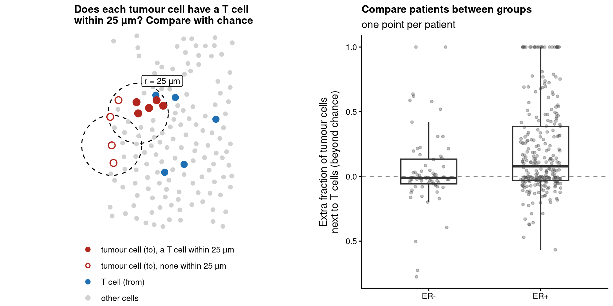

Test whether cell types co-localise differently between groups of patients.
Do T cells gather around tumour cells more in one group of patients than in another? spicyR tests this for every pair of cell types in imaging and spatial transcriptomics data, comparing groups of patients or relating co-localisation to survival. For each image it asks what fraction of the cells of one type have a cell of another type within a radius, and compares that with what you would expect if the cells had been labelled at random, using the cells actually present. Holes, air spaces and uneven cell density therefore do not by themselves create a signal. Patients, not images or cells, are the units of the test. It needs the type and position of every cell (for example imaging mass cytometry, CODEX, MIBI, Xenium or CosMx), not spot-based data.

Quick start
library(spicyR)
spe <- SpatialDatasets::spe_Ali_2020() # breast cancer imaging mass cytometry
spe <- spe[, spe$ER.Status %in% c("neg", "pos")]
res <- spicy(spe, condition = "ER.Status", subject = "metabricId", r = 25, # reference group: "neg"
imageID = "file_id", cellType = "description")
topPairs(res) # the most significant pairs
signifPlot(res) # every pair at a glance
spicyBoxPlot(res, from = "T cells", to = "HR- Ki67+") # proliferating tumour cells next to T cellsFor your own data, spicy() accepts a SpatialExperiment, a SingleCellExperiment or a data.frame. It looks for the columns imageID and cellType (name yours with imageID = and cellType =) and takes coordinates from spatialCoords(), or from columns x and y. A pair from → to asks whether to cells are placed near from cells more than other cells are: the extra fraction of to cells with a from cell nearby (effect = "count" gives the number of extra from cells around each to cell instead).
What you get
- A table with one row per pair of cell types: the extra fraction of
tocells next tofromcells in each group, the difference, a p-value and an FDR-adjusted p-value. Eachtocell counts once, however manyfromcells are beside it, so more numerous or more tightly packedfromcells do not inflate the effect. - A plot of every pair at once, the per-image values behind any pair (interactive, to find the images worth looking at), and a plot of any image.
- The same test with covariates, several radii, more than two groups, or a survival outcome.
Installation
spicyR 2.0, described here, is in the development version of Bioconductor and will be in its next release:
if (!require("BiocManager", quietly = TRUE)) install.packages("BiocManager")
BiocManager::install("spicyR", version = "devel")
BiocManager::install("SydneyBioX/spicyR") # or the latest version from GitHubBiocManager::install("spicyR") with the current Bioconductor release installs spicyR 1.x.
Coming from spicyR 1.x
spicyR 2.0 changes the default test. The image-level test of earlier versions, which compares a per-image summary of the L-function with a mixed model, is still available, with the same results, as spicy(..., method = "image"). topPairs(), signifPlot(), spicyBoxPlot() and bind() work with both.
Learn more
- Introduction to spicyR: a full analysis of breast cancer imaging mass cytometry data.
- The original image-level test.
- spicyr, the same analysis in Python, for SpatialData and AnnData objects.
Citation
Canete NP, Iyengar SS, Ormerod JT, Baharlou H, Harman AN, Patrick E (2022). spicyR: spatial analysis of in situ cytometry data in R. Bioinformatics 38(11), 3099–3105. doi:10.1093/bioinformatics/btac268. A paper describing the cell-level test is in preparation.
Contact
Questions and bug reports: GitHub issues or ellis.patrick@sydney.edu.au. For developers: CONTRIBUTING.
spicyR 2.0 (version 1.99.6) is a development version. Authors: Nicolas Canete, Ellis Patrick, Sadiq Dohadwalla, Elijah Willie, Nicholas Robertson, Alex Qin, Farhan Ameen and Shreya Rao. Licence: GPL (>= 2).